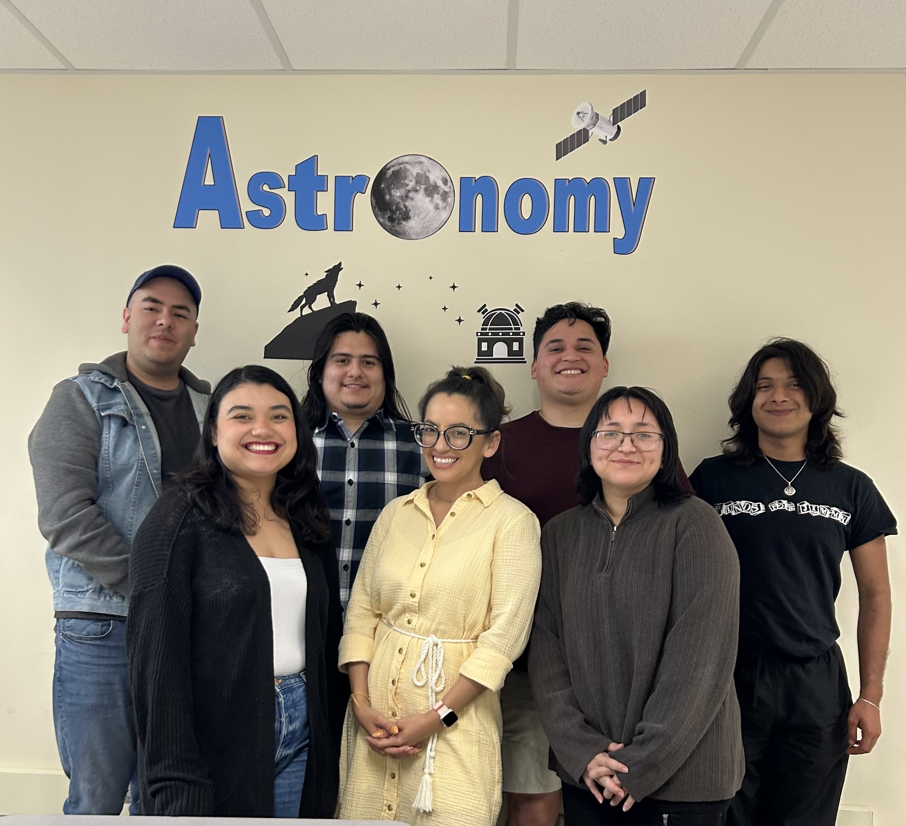

TOGL: Tiny Old Galaxies Lab
Near Field Cosmology,
Local Group Galaxy Evolution.
TOGL studies near–field cosmology and galaxy evolution using both optical telescopes and cosmological simulations. In particular, my work focuses on ultra–faint dwarf galaxies — researching these possible relics of the first galaxies ever formed to learn more about the early universe, how the earliest galaxies evolve, and how they can be used as a tool to learn more about our own galaxy, the Milky Way. My students also study variable stars living in the Milky Way to learn about our own galaxy from within.

TOGL's Work Online
Links to academic work and professional presence.